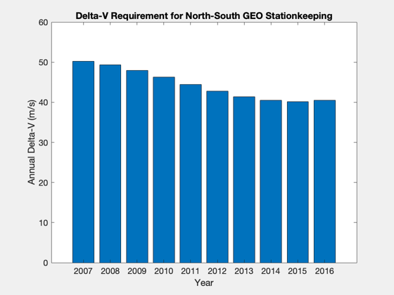
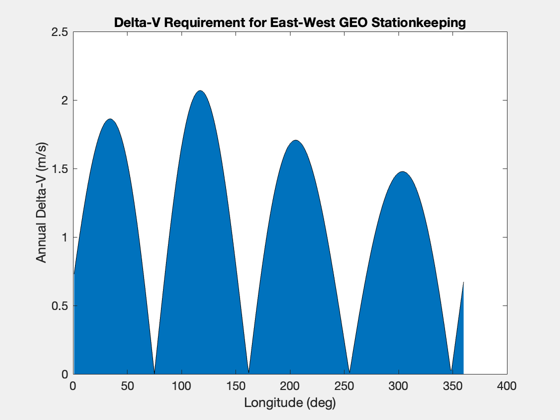

GEO Stationkeeping Example
Utilizes pause. ------------------------------------------------------------------------- See also NewFig, DVGeoTrx, DVIDrift -------------------------------------------------------------------------
Contents
%-------------------------------------------------------------------------- % Copyright 2007 Princeton Satellite Systems, Inc. % All rights reserved. %-------------------------------------------------------------------------- clear area; % area is often times a var, make sure its open for function echo on
FIRST COMPUTE ANNUAL DELTA-V for NORTH-SOUTH STATION-KEEPING
% tracking tolerance tol = 0.1; % deg year = 2007:2016; % consider these years % north-south station-keeping [dVNS,dTNS] = DVIDrift( .1, year ); % Spacecraft Control Toolbox function annualDV = 365./dTNS*dVNS; NewFig('GEOStationKeeping'); bar(year,annualDV) xlabel('Year'), ylabel('Annual Delta-V (m/s)') title('Delta-V Requirement for North-South GEO Stationkeeping')
%% FIRST COMPUTE ANNUAL DELTA-V for NORTH-SOUTH STATION-KEEPING
% tracking tolerance
tol = 0.1; % deg
year = 2007:2016; % consider these years
% north-south station-keeping
[dVNS,dTNS] = DVIDrift( .1, year ); % Spacecraft Control Toolbox function
annualDV = 365./dTNS*dVNS;
NewFig('GEOStationKeeping');
bar(year,annualDV)
xlabel('Year'), ylabel('Annual Delta-V (m/s)')
title('Delta-V Requirement for North-South GEO Stationkeeping')
 NEXT COMPUTE ANNUAL DELTA-V for EAST-WEST STATION-KEEPING
% east-west station-keeping [dVEWy, acc, dTEW] = DVGeoTrx( 1:360, .1 ); % Spacecraft Control Toolbox function NewFig('GEOStationKeeping'); area(dVEWy) xlabel('Longitude (deg)'), ylabel('Annual Delta-V (m/s)') title('Delta-V Requirement for East-West GEO Stationkeeping')
%% NEXT COMPUTE ANNUAL DELTA-V for EAST-WEST STATION-KEEPING
% east-west station-keeping
[dVEWy, acc, dTEW] = DVGeoTrx( 1:360, .1 ); % Spacecraft Control Toolbox function
NewFig('GEOStationKeeping');
area(dVEWy)
xlabel('Longitude (deg)'), ylabel('Annual Delta-V (m/s)')
title('Delta-V Requirement for East-West GEO Stationkeeping')
 NOW COMPUTE TOTAL DELTA-V REQUIREMENT
% approximate total delta-v requirement longitude 267 deg
dVEWyMSP = DVGeoTrx( 267, .1 );
dVTotal = sum(annualDV)+dVEWyMSP*length(year)
%% NOW COMPUTE TOTAL DELTA-V REQUIREMENT
% approximate total delta-v requirement longitude 267 deg
dVEWyMSP = DVGeoTrx( 267, .1 );
dVTotal = sum(annualDV)+dVEWyMSP*length(year)
dVTotal =
449.25
NOW COMPUTE PROPELLANT MASS
% compute propellant mass
mf = 4000;
ISP = 220;
g = 9.81;
mp = mf*( exp(dVTotal/g/ISP)-1 );
%% NOW COMPUTE PROPELLANT MASS % compute propellant mass mf = 4000; ISP = 220; g = 9.81; mp = mf*( exp(dVTotal/g/ISP)-1 );
NOW double ISP and recompute
mp2 = mf*( exp(dVTotal/g/(2*ISP))-1 ); echo off fprintf('Propellant Mass for ISP of %d sec: %4.2f kg,\n',ISP,mp); fprintf('Propellant Mass for ISP of %d sec: %4.2f kg,\n',2*ISP,mp2); fprintf('\nOnly %3.1f %% of the original propellant mass is needed.\n',100*mp2/mp); echo off %-------------------------------------- % $Id: 14e9c7b50f79a557898f08c05365e07a9e42a1f5 $
%% NOW double ISP and recompute mp2 = mf*( exp(dVTotal/g/(2*ISP))-1 ); echo off Propellant Mass for ISP of 220 sec: 925.63 kg, Propellant Mass for ISP of 440 sec: 438.75 kg, Only 47.4 % of the original propellant mass is needed.